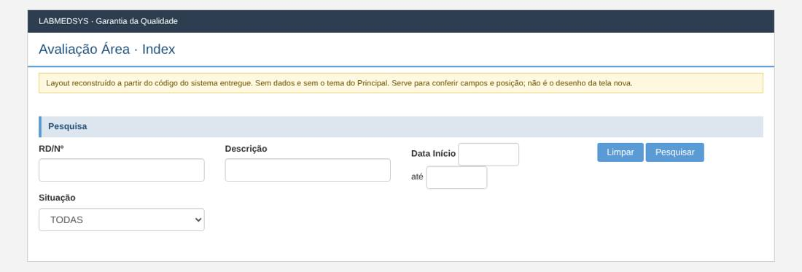
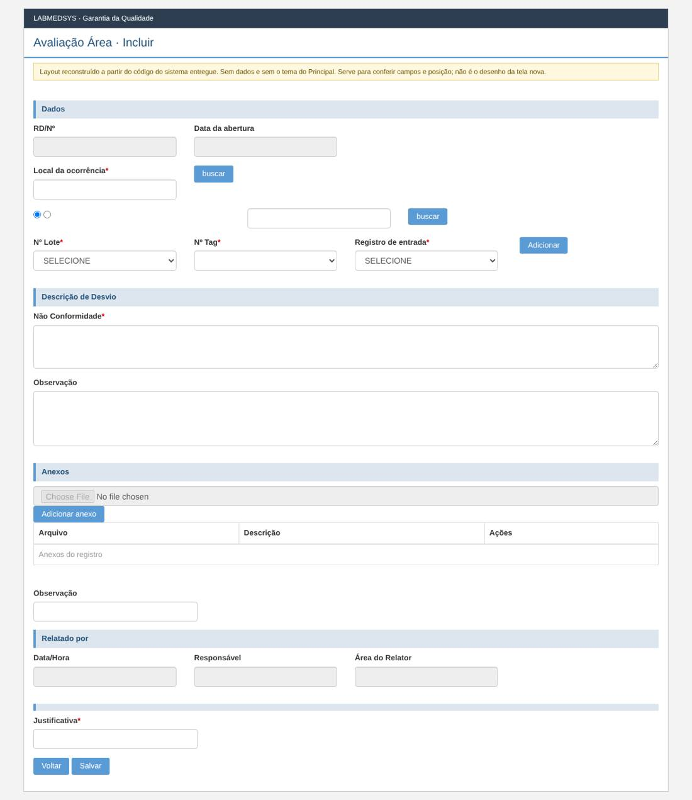
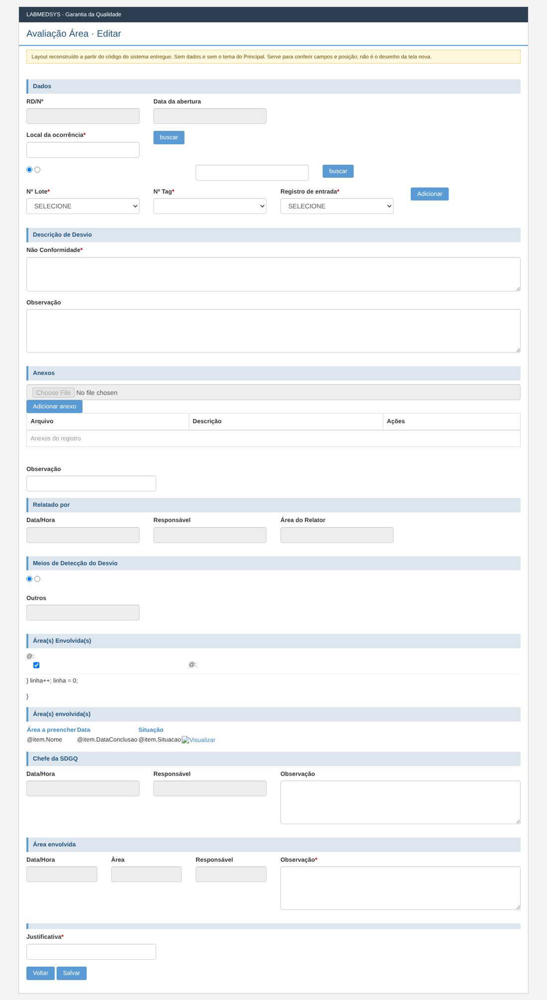
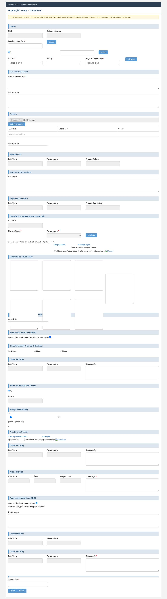
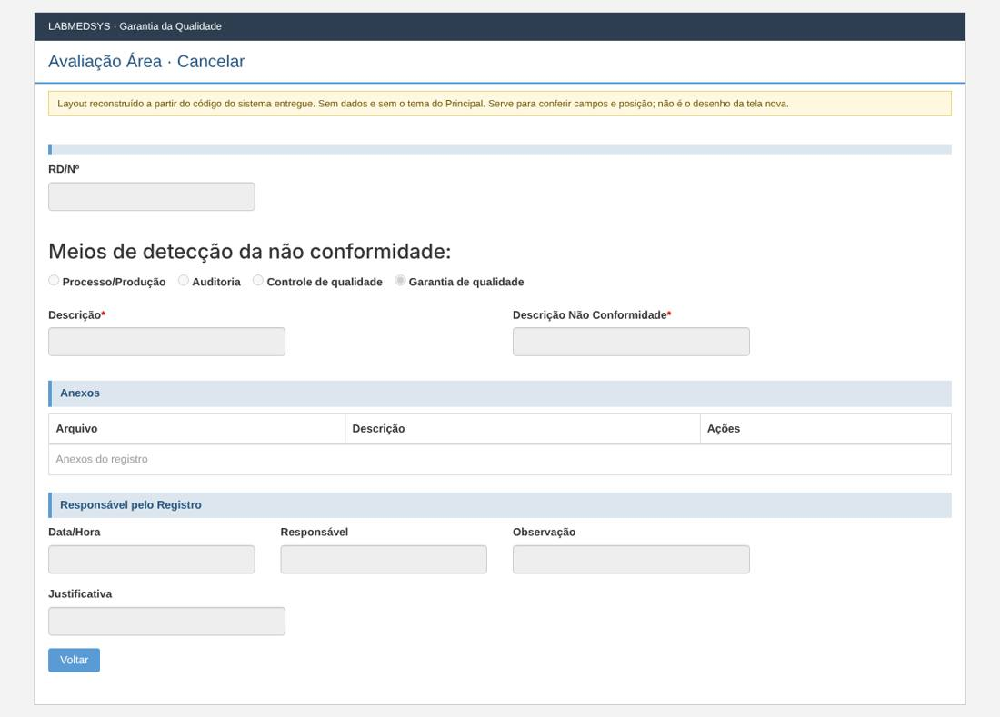

Menu: Garantia da Qualidade · Controle de Desvios · Ficha: rascunho automático, a completar · Origem no sistema entregue: AvaliacaoAreaRD
As telas novas seguem o processo e as regras do sistema entregue, sem transcrever o que for falha de código, de conceito ou de campo mal colocado. Cada decisão na ficha é Manter, Corrigir ou Ideal depois.
Como é a tela no sistema entregue (layout reconstruído)
Reconstruído a partir do código das páginas do sistema entregue: mostra os campos, os rótulos, os asteriscos de obrigatório e a posição. Não tem dados e não usa o tema do Principal; os prints reais estão logo abaixo. Opções marcadas por padrão (caixas e botões de opção) são do código, não de dados.
Lista

Incluir

Editar

Visualizar

Cancelar

Levantamento no código (rascunho automático)
A ficha completa desta tela ainda não foi escrita. Abaixo está o levantamento automático feito no código do sistema entregue: páginas, rotas, campos, modelos, regras de validação do servidor, situações e mensagens.
Menu: Garantia da Qualidade › Controle de Desvios › Avaliação Área
Origem no legado: área Bloco2, controlador AvaliacaoAreaRDController (HSolutions.GQ.UI/Areas/Bloco2/Controllers/AvaliacaoAreaRDController.cs)
Estado: rascunho automático do levantamento; a ficha completa fica em ../fichas/.
Este levantamento descreve o comportamento atual do sistema entregue, sem julgamento. A decisão do que manter, corrigir ou deixar para o ideal está na ficha completa.
1. Páginas da tela
| Página | Arquivo | Modelo |
|---|---|---|
| Cancelar | HSolutions.GQ.UI/Areas/Bloco2/Views/AvaliacaoAreaRD/Cancelar.cshtml | RegistroNaoConformidadeEditarModel |
| Editar | HSolutions.GQ.UI/Areas/Bloco2/Views/AvaliacaoAreaRD/Editar.cshtml | PartialRelatorioDesvioModel |
| Incluir | HSolutions.GQ.UI/Areas/Bloco2/Views/AvaliacaoAreaRD/Incluir.cshtml | PartialRelatorioDesvioModel |
| Index | HSolutions.GQ.UI/Areas/Bloco2/Views/AvaliacaoAreaRD/Index.cshtml | AvaliacaoAreaRDIndexModel |
| Visualizar | HSolutions.GQ.UI/Areas/Bloco2/Views/AvaliacaoAreaRD/Visualizar.cshtml | PartialRelatorioDesvioModel |
Partials usados: HSolutions.GQ.UI/Views/Shared/_GridAnexos.cshtml, HSolutions.GQ.UI/Areas/Bloco2/Views/Shared/_PartialRelatorioDesvio.cshtml, HSolutions.GQ.UI/Views/Shared/_Log.cshtml
2. Ações do controlador (rotas)
| Ação | Retorno | Parâmetros | Atributos | Linha |
|---|---|---|---|---|
| Index | ActionResult | AutorizacaoHandler | 39 | |
| Pesquisar | JsonResult | DateTime? dataInicio, DateTime? dataFim, int? indice, string rncn, string descricao, int situacao | HttpPost | 46 |
| Incluir | ActionResult | AutorizacaoHandler | 152 | |
| Editar | ActionResult | int id, int idAreaEnvolvida | AutorizacaoHandler | 165 |
| Visualizar | ActionResult | int idRelatorioDesvio, int idAreaEnvolvida | 200 | |
| EditarRelatorioDesvio | JsonResult | PartialRelatorioDesvioModel model | HttpPost | 237 |
| Imprimir | ActionResult | int id | HttpGet | 311 |
3. Campos, colunas e botões
Cancelar (HSolutions.GQ.UI/Areas/Bloco2/Views/AvaliacaoAreaRD/Cancelar.cshtml)
Títulos e seções: Meios de detecção da não conformidade: (:48)
Rótulos: RD/Nº (:39); Processo/Produção (:54); Auditoria (:60); Controle de qualidade (:66); Garantia de qualidade (:72); Descrição * (:80); Descrição Não Conformidade * (:84); Data/Hora (:118); Responsável (:123); Observação (:127); Justificativa (:132)
| Tipo | Campo | Linha |
|---|---|---|
| input:hidden | hfId | 27 |
| input:text | txtRNCN | 40 |
| input:text | txtDescricao | 81 |
| input:text | txtDescricaoNaoConformidade | 85 |
| input:text | txtDataHora | 119 |
| input:text | txtResponsavel | 124 |
| input:text | txtObservacao | 128 |
| input:text | txtJustificativa | 133 |
| input:button | btnVoltar | 144 |
| input:button | btnCancelar | 145 |
Botões e atalhos: Voltar (:144); Cancelar Registro (:145)
Index (HSolutions.GQ.UI/Areas/Bloco2/Views/AvaliacaoAreaRD/Index.cshtml)
Rótulos: RD/Nº (:27); Descrição (:32); Data Início (:37); Situação (:56)
| Tipo | Campo | Linha |
|---|---|---|
| input:text | txtRNCN | 28 |
| input:text | txtDescricao | 33 |
| input:text | txtDataInicio | 39 |
| input:text | txtDataFim | 43 |
| select | cboSituacao | 57 |
Botões e atalhos: Limpar (:48); Pesquisar (:49)
_PartialRelatorioDesvio (HSolutions.GQ.UI/Areas/Bloco2/Views/Shared/_PartialRelatorioDesvio.cshtml)
Rótulos: RD/Nº (:91); Data da abertura (:95); Local da ocorrência * (:102); @Model.TiposItemDesvio[i].Text    (:124); Nº Lote * (:143); Nº Tag * (:151); Registro de entrada * (:160);   (:168); Não Conformidade * (:191); Observação (:198); Observação (:231); Data/Hora (:244); Responsável (:249); Área do Relator (:254); Descrição (:278); Data/Hora (:292); Responsável (:297); Área do Supervisor (:302); CAPA/Nº (:326); Divisão/Seção * (:332); Responsável * (:336);   (:341); Descrição (:451); Necessário abertura de Controle de Mudança? (:463); Crítico (:476); Maior (:480); Menor (:484); Data/Hora (:495); Responsável (:500); Observação (:505); @Model.MetodosDeteccaoNaoConformidade[i].Text    (:545); Outros (:552); @Model.SelectListItemAreasEnvolvidas[i].Text    (:604); Data/Hora (:689); Responsável (:694); Observação (:699); Data/Hora (:728); Àrea (:733); Responsável (:738); Observação * (:744); Necessário abertura de CAPA? (:770); OBS: Se não, justificar no espaço abaixo: (:773); Observação (:779); Data/Hora (:794); Responsável (:799); Data/Hora (:814); Responsável (:819); Observação * (:824); Justificativa * (:842)
| Tipo | Campo | Linha |
|---|---|---|
| input:hidden | hfId | 75 |
| input:hidden | hfIdLocalOcorrencia | 76 |
| input:hidden | hfIdAreaEnvolvida | 77 |
| input:hidden | hfEAcaoImediata | 78 |
| input:hidden | hfDisableFields | 79 |
| input:hidden | hfActionType | 80 |
| input:hidden | hfDisabledSalvar | 81 |
| input:hidden | hfSituacaoAtual | 82 |
| input:text | txtRNCN | 92 |
| input:text | txtDataAbertura | 96 |
| input:text | txtLocalOcorrencia | 103 |
| input:button | btnLocalOcorrencia | 106 |
| input:text | txtItemDesvio | 130 |
| input:button | btnItemDesvio | 133 |
| select | cboNumeroLote | 144 |
| select | cboTag | 152 |
| select | cboRegistroEntrada | 161 |
| input:button | btnAdicionarLoteRegistroEntrada | 169 |
| textarea | txtDescricaoRD | 192 |
| textarea | txtObservacaoRD | 199 |
| input:text | txtObservacaoAnexo | 232 |
| input:text | txtDataHora | 245 |
| input:text | txtResponsavel | 250 |
| input:text | txtAreaRelator | 255 |
| textarea | txtDescricaoAcaoCorretivaImediata | 279 |
| input:text | txtDataHoraAcaoImediata | 293 |
| input:text | txtResponsavelAcaoImediata | 298 |
| input:text | txtAreaSupervisorAcaoImediata | 303 |
| input:text | txtCapaNum | 327 |
| select | slAreaResponsavel | 337 |
| input:button | btnAdicionarArea | 343 |
| textarea | txtDiagrama1 | 415 |
| textarea | txtDiagrama2 | 418 |
| textarea | txtDiagrama3 | 421 |
| textarea | txtDiagrama4 | 426 |
| textarea | txtDiagrama5 | 429 |
| textarea | txtDiagrama6 | 432 |
| textarea | txtDiagrama7 | 439 |
| input:text | txtCapaAvaliacaoImpacto | 452 |
| input:checkbox | cbAberturaControleMudanca | 464 |
| input:text | txtDataHoraCapa | 496 |
| input:text | txtResponsavelCapa | 501 |
| input:text | txtObservacaoCapa | 506 |
| textarea | txtObservacaoCapa | 507 |
| input:text | txtMetodoDeteccaoNCOutros | 555 |
| input:text | txtMetodoDeteccaoNCOutros | 559 |
| input:text | txtDataHoraPreAvaliacao | 690 |
| input:text | txtResponsavelPreAvaliacao | 695 |
| textarea | txtObservacaoPreAvaliacao | 700 |
| input:text | txtDataHoraAvaliacaoArea | 729 |
| input:text | txtAreaResponsavelAvaliacaoAreaRD | 734 |
| input:text | txtResponsavelAvaliacaoArea | 739 |
| input:text | txtObservacaoAvaliacaoArea | 745 |
| textarea | txtObservacaoAvaliacaoArea | 746 |
| input:checkbox | cbAberturaCapa | 771 |
| textarea | txtObservacaoAberturaCapa | 780 |
| input:text | txtDataHoraAvaliacaoRD | 795 |
| input:text | txtResponsavelAvaliacaoRD | 800 |
| input:text | txtDataHoraAvaliacaoChefeDGQ | 815 |
| input:text | txtResponsavelAvaliacaoChefeDGQ | 820 |
| textarea | txtObservacaoAvaliacaoChefeDGQ | 825 |
| input:text | txtjustificativa | 843 |
| input:button | btnVoltar | 854 |
| input:button | btnSalvar | 857 |
| input:button | btnFecharModal_log | 873 |
| input:button | btnItensFecharModal_log | 885 |
Botões e atalhos: buscar (:106); buscar (:133); Adicionar (:169); Adicionar (:343); Voltar (:854); Salvar (:857); FECHAR (:873); FECHAR (:885)
_Log (HSolutions.GQ.UI/Views/Shared/_Log.cshtml)
Botões e atalhos: FECHAR (:7)
4. Modelos de dados da tela
AvaliacaoAreaRDIndexModel (HSolutions.GQ.UI/Areas/Bloco2/Models/AvaliacaoAreaRDIndexModel.cs)
| Tipo | Propriedade | Validação | Linha |
|---|---|---|---|
| IList |
Situacoes | 16 | |
| IList |
ListUsuarios | 18 |
AvaliacaoAreaRDIndexResultadoModel (HSolutions.GQ.UI/Areas/Bloco2/Models/AvaliacaoAreaRDIndexResultadoModel.cs)
| Tipo | Propriedade | Validação | Linha |
|---|---|---|---|
| int | Id | 17 | |
| int | IdAreaEnvolvida | 18 | |
| string | RNCN | 19 | |
| string | Descricao | 20 | |
| DateTime? | DataAbertura | 21 | |
| string | Situacao | 22 | |
| string | SituacaoPreventiva | 23 |
GridModel (HSolutions.GQ.UI/Models/GridModel.cs)
| Tipo | Propriedade | Validação | Linha |
|---|---|---|---|
| IEnumerable |
Source | 14 | |
| PaginacaoGridModel | Paginacao | 16 |
PartialRelatorioDesvioModel (HSolutions.GQ.UI/Areas/Bloco2/Models/PartialRelatorioDesvioModel.cs)
| Tipo | Propriedade | Validação | Linha |
|---|---|---|---|
| IList |
Anexos | 22 | |
| IList |
ListaItensLoteRegistroEntrada | 23 | |
| IList |
TiposItemDesvio | 24 | |
| IList |
AreasEnvolvidas | 25 | |
| IList |
TiposVisualizacaoRD | 26 | |
| int | Id | 28 | |
| int | IdAreaEnvolvida | 29 | |
| string | Rnc | 30 | |
| string | DataRD | 31 | |
| int | IdLocalOcorrencia | 32 | |
| string | LocalOcorrencia | 33 | |
| int | TipoItem | 34 | |
| int | IdItemRD | 35 | |
| string | DescriptionItemRD | 36 | |
| string | TagItemRD | 37 | |
| string | DescricaoDesvio | 38 | |
| string | ObservacaoDesvio | 39 | |
| string | ObservacaoAnexo | 40 | |
| string | Justificativa | 41 | |
| string | NomeResponsavelRD | 42 | |
| string | AreaDoResponsavelRD | 43 | |
| TipoSituacao | Situacao | 45 | |
| int | SituacaoAtual | 46 | |
| bool | EAcaoImediata | 49 | |
| bool | ECancelamento | 50 | |
| bool | EVisualizar | 51 | |
| string | DescricaoAcaoCorretivaImediata | 55 | |
| string | DataHoraAcaoImediata | 56 | |
| string | ResponsavelAcaoImediata | 57 | |
| string | AreaSupervisorAcaoImediata | 58 | |
| IList |
MetodosDeteccaoNaoConformidade | 62 | |
| IList |
SelectListItemAreasEnvolvidas | 63 | |
| TipoMetodoDeteccaoNaoConformidade | MeioDeteccao | 64 | |
| string | ObservacaoPreAvaliacaoRDChefeDGQ | 65 | |
| string | DataHoraPreAvaliacaoRDChefeDGQ | 66 | |
| string | ResponsavelPreAvaliacaoRD | 67 | |
| string | ObservacaoAvaliacaoAreaRD | 70 | |
| string | DataHoraAvaliacaoAreaRD | 71 | |
| string | ResponsavelAvaliacaoAreaRD | 72 | |
| string | AreaResponsavelAvaliacaoAreaRD | 73 | |
| bool | NecessariaAberturaCapa | 76 | |
| bool | NecessariaAberturaControleMudanca | 77 | |
| string | ObservacaoAberturaCapa | 78 | |
| string | DataHoraAvaliacaoRD | 79 | |
| string | ResponsavelAvaliacaoRD | 80 | |
| string | DataHoraAvaliacaoChefeDGQRD | 81 | |
| string | ResponsavelAvaliacaoChefeDGQRD | 82 | |
| string | ObservacaoAvaliacaoChefeDGQ | 83 | |
| string | CapaNum | 86 | |
| string | CapaDiagrama1 | 87 | |
| string | CapaDiagrama2 | 88 | |
| string | CapaDiagrama3 | 89 | |
| string | CapaDiagrama4 | 90 | |
| string | CapaDiagrama5 | 91 | |
| string | CapaDiagrama6 | 92 | |
| string | CapaDiagrama7 | 93 | |
| string | CapaAvaliacaoImpacto | 94 | |
| TipoCriticidade | CapaCriticidade | 95 | |
| string | ResponsavelCapa | 96 | |
| string | ObservacaoCapa | 97 |
RegistroNaoConformidadeEditarModel (HSolutions.GQ.UI/Areas/Bloco2/Models/RegistroNaoConformidadeEditarModel.cs)
| Tipo | Propriedade | Validação | Linha |
|---|---|---|---|
| bool | PodeAprovarMonitoramentoPlanoAcaoCorretiva | 14 | |
| IList |
Anexos | 16 | |
| IList |
ListUsuarios | 18 | |
| IList |
AcoesPlanoAcaoCorretivo | 19 | |
| IList |
AcoesPlanoAcaoPreventiva | 20 | |
| IList |
AcaoResultado | 21 | |
| IList |
AcaoResultadoPreventiva | 22 | |
| int | Id | 24 | |
| string | RNCN | 25 | |
| string | Justificativa | 26 | |
| string | Observacao | 27 | |
| string | Descricao | 28 | |
| string | TituloAcaoCorretiva | 29 | |
| string | DescricaoAcaoCorretiva | 30 | |
| string | TituloAcaoPreventiva | 31 | |
| string | DescricaoAcaoPreventiva | 32 | |
| string | DescricaoNaoConformidade | 33 | |
| string | ObservacaoNaoConformidade | 34 | |
| int | MetodoDeteccaoNaoConformidade | 35 | |
| string | MetodoDeteccaoNCOutros | 36 | |
| string | Responsavel | 38 | |
| string | DataAtualizacao | 39 | |
| string | JustificativaLiberacao | 41 | |
| string | ObservacaoLiberacao | 42 | |
| bool | AcoesCorretivasImplementadasLiberacao | 43 | |
| bool | AcoesPreventivasImplementadasLiberacao | 44 | |
| string | ObservacoesRecomendacoesFinaisLiberacaoCorretiva | 45 | |
| string | ObservacoesRecomendacoesFinaisLiberacaoPreventiva | 46 | |
| string | DataLiberacao | 47 | |
| string | ResponsavelLiberacao | 48 | |
| int | IdUsuarioComunicadoGQ | 50 | |
| string | NomeUsuarioComunicadoGQ | 51 | |
| string | DataComunicadoGQ | 52 | |
| int | IdUsuarioComunicado | 53 | |
| string | NomeUsuarioComunicado | 54 | |
| string | DataComunicado | 55 | |
| IList |
SetoresEnvolvidos | 56 | |
| bool | Bloquear | 57 | |
| AcaoCorretivaModel | AcaoCorretiva | 59 | |
| AcaoPreventivaModel | AcaoPreventiva | 60 | |
| AvaliacaoPlanoAcaoCorretivaSalvarModel | AvaliacaoPlanoAcaoCorretivaModel | 61 | |
| AvaliacaoPlanoAcaoPreventivaSalvarModel | AvaliacaoPlanoAcaoPreventivaModel | 62 | |
| IList |
SelectListItemAreasEnvolvidas | 63 |
UploadModel (HSolutions.GQ.UI/Models/UploadModel.cs)
| Tipo | Propriedade | Validação | Linha |
|---|---|---|---|
| string | Url | 43 | |
| string | PosCallback | 47 | |
| string | PreCallback | 51 | |
| IDictionary |
Status | 53 | |
| bool | ExibeObservacao | 54 |
5. Situação (estado) e histórico
- Pesquisar (:46)
- CONSULTA: Nenhum, PendenteAvaliacaoRelatorioDesvio, PendenteResponsavelArea
- MUDA PARA: Nenhum (:88)
- EditarRelatorioDesvio (:237)
- CONSULTA: Pendente
- MUDA PARA: Concluido (:264), PendenteAvaliacaoRelatorioDesvio (:276)
- HISTÓRICO: altera com histórico (:286)
- Imprimir (:311)
- MENSAGENS: "A Observação da Área é obrigatória." (:353)
6. Regras de validação do servidor
Cada linha é uma regra que o servidor confere ao gravar. A mensagem é a que o usuário vê.
| Validador | Quando recusa (condição) | Mensagem | Campo | Linha |
|---|---|---|---|---|
| AcaoCorretivaImediataRDValidator | if (entity == null) | Entidade de domínio não pode ser nula. | — | 17 |
| AcaoCorretivaImediataRDValidator | if (string.IsNullOrEmpty(relatorioNaoConformidade.AcaoCorretivaImediata.Descricao)) | Descrição da ação imediata é obrigatória. | Descricao | 26 |
| PreAvaliacaoRNCValidator | if (entity == null) | Entidade de domínio não pode ser nula. | — | 17 |
| PreAvaliacaoRNCValidator | if (relatorioNaoConformidade.MetodoDeteccaoNaoConformidade == Enumeradores.TipoMetodoDeteccaoNaoConformidade.Nenhum) | Meio de Detecção da não conformidade é obrigatório. | MetodoDeteccaoNaoConformidade | 27 |
| PreAvaliacaoRNCValidator | if (string.IsNullOrEmpty(relatorioNaoConformidade.MetodoDeteccaoNCOutros)) | É obrigatório informar um Meio de Detecção da não conformidade no campo Outros. | MetodoDeteccaoNaoConformidade | 35 |
| PreAvaliacaoRNCValidator | if (relatorioNaoConformidade.PreAvaliacaoRNC.DataCriacao == DateTime.MinValue) | A Data de criação é obrigatória. | DataCriacaoPreAvaliacaoRNC | 46 |
| PreAvaliacaoRNCValidator | if (string.IsNullOrEmpty(relatorioNaoConformidade.PreAvaliacaoRNC.NomeResponsavel)) | O Responsavel é obrigatório. | NomeResponsavelPreAvaliacaoRNC | 52 |
| RelatorioNaoConformidadeValidator | if (entity == null) | Entidade de domínio não pode ser nula. | — | 17 |
| RelatorioNaoConformidadeValidator | if (string.IsNullOrEmpty(relatorioNaoConformidade.Descricao)) | Descrição é obrigatória. | Descricao | 26 |
| RelatorioNaoConformidadeValidator | if (relatorioNaoConformidade.IdLocalOcorrencia == 0) | Local de Ocorrência é obrigatório. | LocalOcorrencia | 32 |
| RelatorioNaoConformidadeValidator | if (relatorioNaoConformidade.Situacao != Enumeradores.TipoSituacao.Cancelada) | Justificativa é obrigatória. | Justificativa | 40 |
| RelatorioNaoConformidadeValidator | if (string.IsNullOrEmpty(relatorioNaoConformidade.JustificativaCancelamento) && | Justificativa é obrigatório, quando a situação é de cancelamento. | Justificativa | 49 |
| RelatorioNaoConformidadeValidator | if (relatorioNaoConformidade.Anexos.Where(a => string.IsNullOrEmpty(a.Arquivo)).Any()) | O Anexo é obrigatório. | ArquivoAnexo | 58 |
| RelatorioNaoConformidadeValidator | if (relatorioNaoConformidade.Anexos.Where(a => string.IsNullOrEmpty(a.Descricao)).Any()) | O Anexo é obrigatório. | DescricaoAnexo | 64 |
| RelatorioNaoConformidadeValidator | if (relatorioNaoConformidade.DataCriacao == DateTime.MinValue) | A Data de criação é obrigatória. | DataCriacao | 72 |
| RelatorioNaoConformidadeValidator | if (string.IsNullOrEmpty(relatorioNaoConformidade.NomeResponsavel)) | O Responsavel é obrigatório. | NomeResponsavel | 78 |
7. Mensagens (servidor e navegador)
| Mensagem do servidor | Linha |
|---|---|
| A Observação da Área é obrigatória. | 353 |
Script HSolutions.GQ.UI/Areas/Bloco2/Script/RegistroNaoConformidadeCancelar.js — ações chamadas: actionCancelar
Nada encontrado.
Script HSolutions.GQ.UI/Areas/Bloco2/Script/AvaliacaoAreaIndex.js — ações chamadas: actionImprimir, actionPesquisar
Nada encontrado.
Script HSolutions.GQ.UI/Areas/Bloco2/Script/PartialRelatorioDesvio.js — ações chamadas: actionCancelar, actionEditar, actionGetAreaCapa, actionGetItem, actionGetLocalOcorrencia, actionIncluir
Nada encontrado.
8. A completar na análise
- [ ] Regras de cada campo (obrigatório, tamanho, máscara, origem da lista).
- [ ] Quem pode ver e executar cada ação (funções de permissão).
- [ ] Lookups com outros módulos (Estoque, Produção, Principal).
- [ ] Anexos, relatórios (PDF) e notificações.
- [ ] Falhas conhecidas a replicar (inventário de telas e plano de testes).
- [ ] Casos de teste de aceite (plano de testes da GQ).